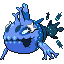

When facing tough opponents, they get into formation. But if they get wounded in battle, they'll scatter and become solitary again.
Other forms: Wishiwashi (Solo).
A form of Wishiwashi (Solo): get the base Pokémon first, the form change follows.
Does not evolve.
| HP | 45 | |
| Attack | 140 | |
| Defense | 130 | |
| Speed | 30 | |
| Sp. Atk | 140 | |
| Sp. Def | 135 | |
| Total | 620 |
| Lv. | Move | Type | Cat. | Pow. | Acc. | PP |
|---|---|---|---|---|---|---|
| 1 | Water Gun | Water | Special | 40 | 100 | 25 |
| 1 | Growl | Normal | Status | — | 100 | 40 |
| 4 | Helping Hand | Normal | Status | — | — | 20 |
| 8 | Beat Up | Dark | Physical | — | 100 | 10 |
| 12 | Brine | Water | Special | 65 | 100 | 10 |
| 16 | Tearful Look | Normal | Status | — | — | 20 |
| 20 | Dive | Water | Physical | 80 | 100 | 10 |
| 24 | Soak | Water | Status | — | 100 | 20 |
| 28 | Uproar | Normal | Special | 90 | 100 | 10 |
| 32 | Aqua Tail | Water | Physical | 90 | 90 | 10 |
| 36 | Aqua Ring | Water | Status | — | — | 20 |
| 40 | Endeavor | Normal | Physical | — | 100 | 5 |
| 44 | Hydro Pump | Water | Special | 110 | 80 | 5 |
| 48 | Double-Edge | Normal | Physical | 120 | 100 | 15 |
| TM | Move | Type | Cat. | Pow. | Acc. | PP |
|---|---|---|---|---|---|---|
| HM03 | Surf | Water | Special | 90 | 100 | 15 |
| HM07 | Waterfall | Water | Physical | 80 | 100 | 15 |
| HM08 | Dive | Water | Physical | 80 | 100 | 10 |
| TM03 | Water Pulse | Water | Special | 60 | 100 | 20 |
| TM06 | Toxic | Poison | Status | — | 90 | 10 |
| TM07 | Hail | Ice | Status | — | — | 10 |
| TM10 | Hidden Power | Normal | Special | 60 | 100 | 15 |
| TM13 | Ice Beam | Ice | Special | 90 | 100 | 10 |
| TM17 | Protect | Normal | Status | — | — | 10 |
| TM18 | Rain Dance | Water | Status | — | — | 5 |
| TM21 | Frustration | Normal | Physical | — | 100 | 20 |
| TM23 | Iron Tail | Steel | Physical | 100 | 75 | 15 |
| TM26 | Earthquake | Ground | Physical | 100 | 100 | 10 |
| TM27 | Return | Normal | Physical | — | 100 | 20 |
| TM32 | Double Team | Normal | Status | — | — | 15 |
| TM42 | Facade | Normal | Physical | 70 | 100 | 20 |
| TM43 | Secret Power | Normal | Physical | 70 | 100 | 20 |
| TM44 | Rest | Psychic | Status | — | — | 5 |
| TM45 | Attract | Normal | Status | — | 100 | 15 |
| Move | Type | Cat. | Pow. | Acc. | PP |
|---|---|---|---|---|---|
| Double-Edge | Normal | Physical | 120 | 100 | 15 |
| Endure | Normal | Status | — | — | 10 |
| Mimic | Normal | Status | — | — | 10 |
| Sleep Talk | Normal | Status | — | — | 10 |
| Snore | Normal | Special | 50 | 100 | 15 |
| Substitute | Normal | Status | — | — | 10 |
| Swagger | Normal | Status | — | 85 | 15 |
| Move | Type | Cat. | Pow. | Acc. | PP |
|---|---|---|---|---|---|
| Mist | Ice | Status | — | — | 30 |
| Muddy Water | Water | Special | 90 | 85 | 10 |
| Water Pulse | Water | Special | 60 | 100 | 20 |
| Water Sport | Water | Status | — | — | 15 |
| Whirlpool | Water | Special | 35 | 85 | 15 |